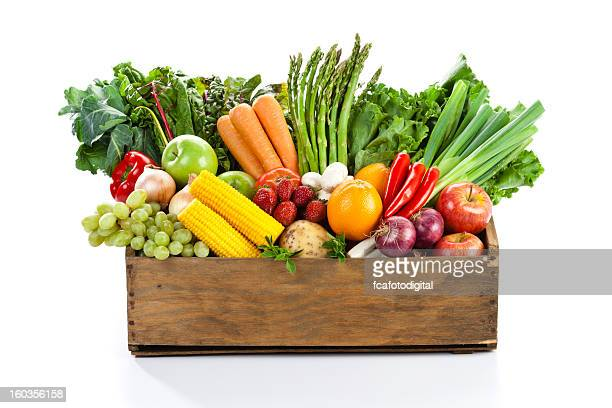

Vegetables
are usually classified on the basis of the part of the plant that is used for food. The root vegetables include beets, carrots, radishes, sweet potatoes, and turnips. Stem vegetables include asparagus and kohlrabi. Among the edible tubers, or underground stems, are potatoes. The leaf and leafstalk vegetables include brussels sprouts, cabbage, celery, lettuce, rhubarb, and spinach. Among the bulb vegetables are garlic, leeks, and onions. The head, or flower, vegetables include artichokes, broccoli, and cauliflower. The fruits commonly considered vegetables by virtue of their use include cucumbers, eggplant, okra, sweet corn, squash, peppers, and tomatoes. Seed vegetables are usually legumes, such as peas and beans.
Some diseases
| Vegetables | Deseases | |
|---|---|---|
| beets | beeturia | |
| carrots | carotenoids | |
| Raw Fruits | Salmonella | |
Vegetables may be washed, sorted, graded, cut, and packaged for sale as fresh products. Fresh vegetables are subject to quick aging and spoilage, but their storage life can be extended by such preservation processes as dehydration, canning, freezing, fermenting, or pickling. The harvesting process should seek to minimise damage and bruising to the crop. Onions and garlic can be dried for a few days in the field and root crops such as potatoes benefit from a short maturation period in warm, moist surroundings, during which time wounds heal and the skin thickens up and hardens. Before marketing or storage, grading needs to be done to remove damaged goods and select produce according to its quality, size, ripeness, and color.

When a vegetable is harvested, it is cut off from its source of water and nourishment. It continues to transpire and loses moisture as it does so, a process most noticeable in the wilting of green leafy crops. Harvesting root vegetables when they are fully mature improves their storage life, but alternatively, these root crops can be left in the ground and harvested over an extended period.